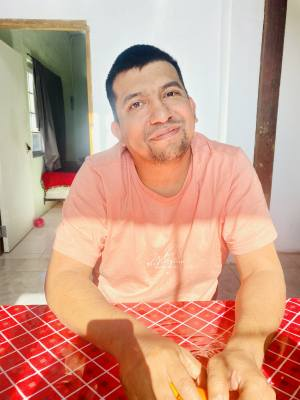

Caesare Gonzalez | WDD 130

Hello! My name is Caesare Gonzalez and I am from Mexicali, Mexico. I am studying web development and I am excited to learn more about creating websites and programming.

Hello! My name is Caesare Gonzalez and I am from Mexicali, Mexico. I am studying web development and I am excited to learn more about creating websites and programming.